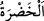
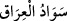
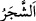
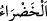
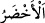
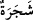

sılasının öncekinin sılasına atfedilmekle yetinilmemesi te’kid için ve delalet keyfiyetleri
farklı olduğundandır.
“ gövdesi olan bitkidir. “ beyaz ile siyah arasında siyaha daha yakın
renklerden biridir. Bu yüzden siyaha yeşil, yeşile de siyah denildiği olur. Irak’ın
yeşilliği çok olan yerine “ denilmiştir. “ kelimesinin “ değil de “ olarak vasfedilmesi lafzına göredir. Çünkü bu kelimenin lafzı müzekker, mânâsı
müennestir. Çünkü “ kelimesinin çoğuludur. Topluluk mânâsı taşıdığı için cemiler/
çoğullar müennestir.
Mânâ şöyledir: Sizin için ve faydalanmanız için merh ve afâr gibi yeşil ağaçtan ateş
yaratmıştır. Merh, çabuk tutuşup yanan bir ağaçtır. Afâr da kendisinden ateş çıkarılan bir
ağaçtır.
Hikmet ehli der ki: Hünnap ağacı dışında her ağaçta ateş vardır. Bundan dolayı
çamaşırcılar hünnap ağacında çamaşır döver ve ondan tokmak yaparlar. Araplar
çakmaklarını merh ve afâr ağacından yaparlar. Arap çöllerinde çoğu yerde bu iki ağaç
bulunur. Kişi bu iki ağaçtan yeşil/yaş ve onlardan su damlar vaziyette misvak gibi iki
dal keser. Bu dallardan erkek olan merhi dişi olan afâr üzerine sürter ve Allah Teâlâ’nın
izni ile ateş tutuşur. İşte Allah Teâlâ’nın şu kavli bunu anlatmaktadır:
“İşte siz ateşi ondan yakıyorsunuz.” Yani ateşi o ağaçtan yakar tutuşturursunuz.
Ondan ateş çıktığından şüphe etmezsiniz. Aynı şekilde Allah Teâlâ’nın soru sormak,
sevap ve cezâ olarak karşılık vermek için ölüleri diriltip kabirlerinden çıkaracağına da
şüphe etmeyin. Çünkü kendisinde ateşe zıt olan ıslaklık olan yeşil ağaçtan bu keyfiyeti
ile ateş çıkarmaya muktedir olan, önceden taze/ıslak iken sonradan kuruyup çürüyen
şeyi (kemikleri) de yeniden yaratmaya çok daha muktedirdir.
Bundan Allah Teâlâ’nın zıtları bir araya getiren olduğu da anlaşılmaktadır. Görmez
misin ki O su, ateş ve tahtayı bir araya toplamıştır. Su ateşi söndürmez, ateş de tahtayı
yakmaz. Allah Teâlâ’nın bedenlerinin yarısı kardan, yarısı da ateşten melekler yarattığı
söylenir. Kar ateşi söndürmez, ateş de karı eritmez.
Ayette beşeriyetin yeşil ağacı ile muhabbet ateşine işaret vardır. İşte kalblerin
kandilleri ancak bu ağaçtan tutuşturulur. Büyüklerden birisi der ki: Bedenin zâhiri
şehâdet âleminden, kalb ise melekût âlemindendir. Kalbin mârifetlerinden bazı eserler
nasıl organlara inip akıyorsa, aynı şekilde şehâdet âleminden olan organların hallerinin
bazı eserleri de kalbe yükselir. Hâsılı zâhir, amellerle yanar tutuşur. Bundan meydana
gelen nurla kalb nurlanır ve hâl artar.
Evlere kapılardan girin
Maksadları sebeplerinden arayıp isteyin
Allah Teâlâ’dan hak yola girmeyi ve tahkîk menziline ulaşmayı niyaz ederiz.